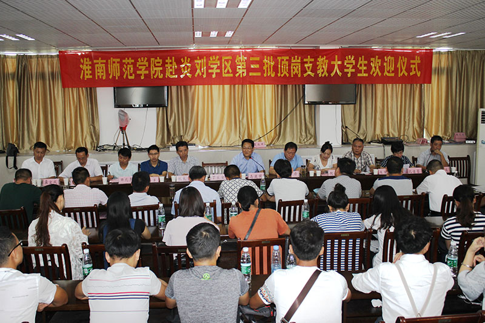
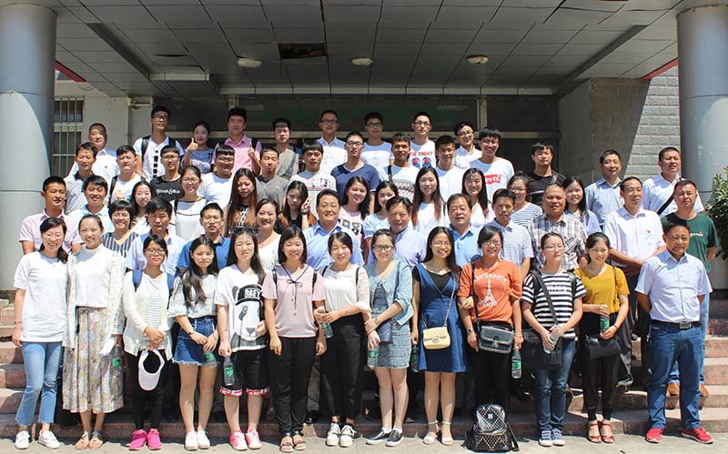

提升扶贫支教内涵 打造升级版炎刘模式
2016-08-30
——淮南师范学院第三批师范生走进炎刘

8月30日早上，淮南师范学院第三批精准扶贫支教师范生带着对农村教育的深厚感情，从母校出发，奔赴寿县炎刘镇。马建国副院长率领教育学院、音乐与舞蹈学院、体育学院、美术与设计学院和外国语学院的主要领导赴炎刘对接，把39名师范生送到炎刘学区的8所受援学校。
寿县炎刘学区举行了隆重的欢迎仪式。寿县教育局局长夏承开和炎刘镇宣传委员王延全分别向支教大学生的到来表示感谢和热烈欢迎。音乐与舞蹈学院院长张良宝和支教生翁薇代表我校师生发言，表达了对扶贫支教工作的坚定信念。马建国在发言中用“三句话”、“9个字”概括对同学们的关怀和勉励。他请同学们牢记三个“一”：安全第一、健康第一、情怀第一；实现三个“转”：转变身份、转变角色、转变观念；做到三个“好”：传承好、发扬好、创新好。他要求支教生在工作中做好记录和反思，以提高自身的专业素养。他说，同学们肩负着打造升级版炎刘模式的使命，一定会为丰富、创新精准扶贫炎刘模式做出贡献。
随着扶贫支教工作的逐步推进，第三批扶贫支教工作又有新的突破。汉语言文学和小学英语两个“卓越教师培训计划”专业的加入使支教队伍的专业结构更加完善。为进一步提升扶贫支教内涵，学校还在前两批扶贫支教的基础上总结经验，针对炎刘学区的学情开展培训，以保证师范生能够迅速适应农村环境，胜任学校的教学和其他各项工作，保证教育教学质量，更好的发挥教育扶贫的长效影响。
